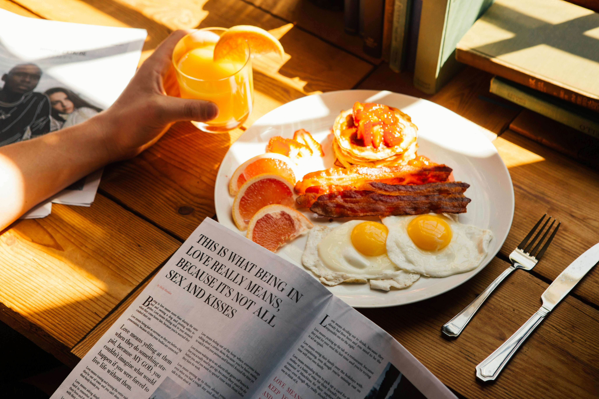
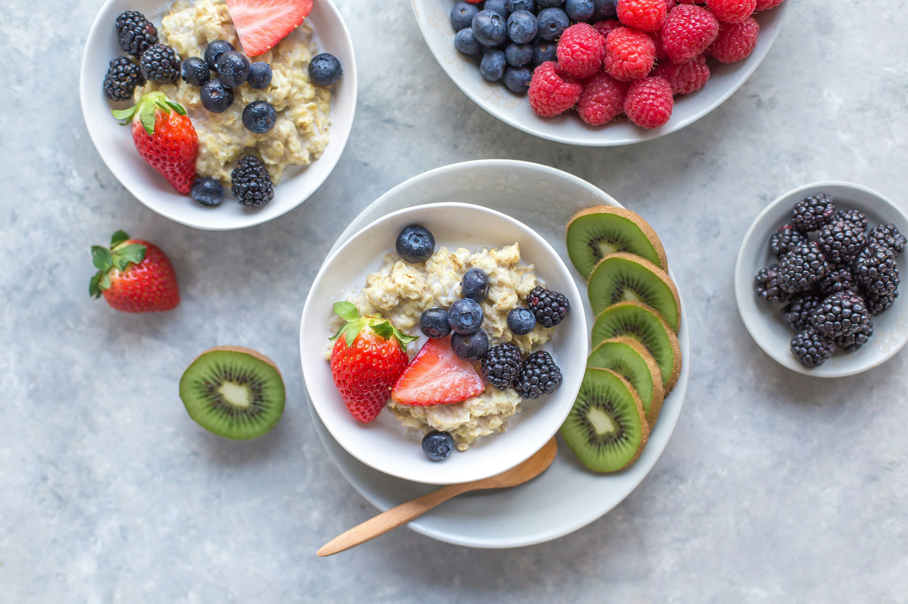

Vocabulary Bank
Vocabulary Bank
Обери слова для вивчення:
(Зміна словника скидає поточний прогрес карток)
Їжа та напої
Кухня та страви
Прикметники
Дієслова, прислівники та вирази
Інші іменники
Злічувані та незлічувані іменники (Countable / Uncountable)
В англійській мові вся їжа та напої поділяються на дві групи:
-
Злічувані (Countable): те, що можна
порахувати поштучно. Вони можуть бути в однині та множині.
Приклади: a mushroom (один гриб) — two mushrooms (два гриби), a biscuit — three biscuits. -
Незлічувані (Uncountable): те, що не
можна порахувати поштучно (рідини, сипучі продукти,
матеріали). Вони не мають форми множини.
Приклади: water (вода), jam (джем), bread (хліб), rice (рис), cheese (сир), bacon (бекон).
Some / Any (Трохи, кілька)
Коли ми говоримо про незлічувані продукти або множину злічуваних, ми рідко знаємо точну кількість. Щоб сказати "трохи" або "кілька", ми використовуємо слова some та any.
Some використовується в стверджувальних реченнях:
- I have some mushrooms. — У мене є кілька грибів.
- There is some juice in the glass. — У склянці є трохи соку.
Any використовується в запереченнях та звичайних запитаннях:
- Do you have any strawberries? — У тебе є (хоч якісь) полуниці?
- There isn't any sugar in my tea. — У моєму чаї немає (ніякого) цукру.
В кафе: як ввічливо замовляти та пропонувати
Як ми щойно з'ясували, у запитаннях зазвичай використовується слово any. Але з цього правила є один дуже важливий виняток для ситуацій у кафе чи в гостях.
Коли ми ввічливо щось просимо або пропонуємо, ми завжди ставимо some замість any:
-
Прохання (Could I have...?)
Could I have some water, please? — Можна мені (трохи) води, будь ласка? -
Пропозиція (Would you like...?)
Would you like some coffee? — Бажаєте кави?
Зверни увагу: українською ми часто просто кажемо "Можна води?" або "Бажаєте кави?", але англійською перед незлічуваними іменниками в таких фразах обов'язково треба додавати some.
Phonetics: Remaining Sounds
Quick Review
Звуки з минулого уроку
Перш ніж переходити до нових звуків, давай швидко пригадаємо приголосні та всі базові голосні, які ми вивчили минулого разу:
Приголосні (Consonants):
- / θ / (глухий міжзубний) — think, math
- / ð / (дзвінкий міжзубний) — this, that
- / ŋ / (носовий "н") — sing, long
Короткі голосні (Short Vowels):
- / ɪ / (короткий "і") — milk, sit
- / e / (короткий "е") — egg, pen
- / æ / (широкий "е") — apple, cat
- / ʌ / (короткий "а") — cup, bus
- / ɒ / (короткий "о") — hot, dog
- / ʊ / (короткий "у") — cook, book
Довгі голосні (Long Vowels):
- / iː / (довгий "і") — meat, tea
- / ɑː / (довгий "а") — glass, fast
- / ɔː / (довгий "о") — sport, tall
- / uː / (довгий "у") — soup, moon
1. Приголосні звуки
Ми вже вивчили більшість приголосних. Сьогодні розглянемо 6 останніх звуків. Деякі з них складаються з двох символів, але вимовляються як один звук.
| Звук | Приклади слів | Вимова |
|---|---|---|
| / w / | water, why, window | Округли й витягни губи вперед у "трубочку", наче збираєшся свиснути або подути на гарячий чай. Звук утворюють тільки губи — язик і зуби участі не беруть, на відміну від українського "в". |
| / r / | rice, red, run | Загни кінчик язика назад і підніми його до піднебіння, але НЕ торкайся ним і не вібруй, як в українському "р". Звук виходить м'який і плавний, майже без тертя. |
| / ʃ / | sugar, fish, shoe | Округли губи трохи вперед, підніми середину язика (не кінчик!) до піднебіння і випусти повітря з тихим шипінням. Звук "ширший" і м'якший за українське "ш". |
| / tʃ / | cheese, chocolate | Одне швидке поєднання двох рухів: спочатку язик повністю перекриває повітря (як / t /), потім різко "відпускає" його в / ʃ /. Разом звучить схоже на українське "ч", але трохи м'якше. |
| / ʒ / | usually, television | Постав губи й язик так само, як для / ʃ /, але додай голос — зв'язки мають вібрувати (поклади пальці на горло, щоб відчути тремтіння). |
| / dʒ / | juice, sausage, jam | Той самий рух, що й для / tʃ /, тільки дзвінко, з голосом — виходить щось середнє між українськими "дж" і м'яким "джь". |
2. The Schwa та довгий / ɜː /
Найголовніший звук англійської: The Schwa / ə /
Схва — найкоротший і найрозслабленіший голосний звук в англійській мові. Уяви легке зітхання або те, як ти кажеш "угу", не думаючи — це майже і є / ə /.
Як його вимовити:
- Повністю розслаб язик і губи — не округлюй їх, як для "о", і не розтягуй, як для "и".
- Рот ледь прочинений, язик лежить у нейтральному положенні: не спереду й не ззаду, не вгорі й не внизу — просто посередині рота.
- Звук виходить коротким і приглушеним, майже "проковтнутим" — його ніколи не тягнуть.
Головне правило: The Schwa ніколи не буває під наголосом. Це звук ненаголошених складів. Коли слово стає довгим, "зайві" ненаголошені голосні перестають звучати чітко і зливаються саме в / ə / — незалежно від того, яка буква написана: a, e, i, o, u чи навіть кілька букв разом:
- water /ˈwɔːtə/
- banana /bəˈnɑːnə/
- breakfast /ˈbrekfəst/
Типова помилка українських учнів: в українській мові кожен голосний вимовляється чітко, навіть ненаголошений (у слові "молоко" всі три "о" звучать по-різному, але виразно). В англійській — навпаки: ненаголошені голосні "лінуються" і перетворюються на / ə /. Саме тому носії мови звучать так швидко і "нерозбірливо" для початківців.
Лайфхак: прошепочи слово. У шепоті наголошений склад все одно виділяється довжиною й чіткістю, а ненаголошені склади "зникають" у легке / ə / — так простіше почути, де саме він ховається.
| Звук | Приклади слів | Вимова |
|---|---|---|
| / ə / | water, about, breakfast | Найкоротший і найслабший звук мови — язик і губи повністю розслаблені, рот ледь відкритий. Звучить як швидке, "проковтнуте" уканя. |
| / ɜː / | bird, girl, word | По суті — це schwa, яку розтягнули й поставили під наголос. Язик у тому самому нейтральному положенні, що й для / ə /, але звук довгий і добре чутний. Губи не округлені й не розтягнуті, просто розслаблені. |
3. Дифтонги (Diphthongs)
Дифтонг — це два голосні звуки, які стоять поруч і плавно перетікають один в одного, утворюючи один склад. Їх всього 8.
Головне правило: перший звук завжди довший і сильніший, а другий — короткий, слабкий і майже "проковтнутий". Язик і губи плавно рухаються від положення першого звука до положення другого, без різкої паузи між ними — ніби один звук "перетікає" в інший.
| Звук | Приклади слів | Вимова |
|---|---|---|
| / eɪ / | bacon /ˈbeɪkən/, day /deɪ/ | Від / e / до / ɪ /: рот трохи відкритий, потім губи плавно розтягуються, ніби в легку посмішку. |
| / aɪ / | rice /raɪs/, time /taɪm/ | Від широкого / a / до / ɪ /: рот широко відкривається, потім швидко "закривається" до посмішки. |
| / ɔɪ / | coin /kɔɪn/, choice /tʃɔɪs/ | Від округленого / ɔ / до / ɪ /: губи спочатку округлені, потім швидко розтягуються. |
| / aʊ / | cow /kaʊ/, brown /braʊn/ | Від відкритого / a / до округленого / ʊ /: рот широко відкривається, потім губи округлюються і стискаються. |
| / əʊ / | code /kəʊd/, cocoa /ˈkəʊkəʊ/ | Від нейтрального schwa / ə / до округленого / ʊ /: губи ледь округлюються дедалі більше до кінця звука. |
| / ɪə / | cereal /ˈsɪəriəl/, here /hɪə/ | Від / ɪ / до / ə /: губи спочатку трохи розтягнуті, потім розслабляються в нейтральне положення. |
| / eə / | there /ðeə/, hair /heə/ | Від / e / до / ə /: рот середньо відкритий, потім плавно розслабляється. |
| / ʊə / | tourist /ˈtʊərɪst/, pure /pjʊə/ | Від округленого / ʊ / до / ə /: губи спочатку округлені, потім розслабляються. |
Pronunciation Videos
Schwa sound / ə /
Long vowel / ɜː /
Diphthong / ɪə /
Diphthong / aʊ /
Diphthong / əʊ /
Diphthong / eə /
Diphthong / ʊə /
Consonant / r /
Consonant / w /
Exercises
Exercise 1
Exercise 1.1: Read out loud
Прочитай ці слова вголос, звертаючи увагу на транскрипцію та нові звуки:
- /ˈwɔːtə/ water
- /ˈtʃiːzkeɪk/ cheesecake
- /ˈbɜːɡə/ burger
- /dɪˈlɪʃəs/ delicious
- /dʒuːs/ juice
- /ˈmeʒə/ measure
- /təʊst/ toast
- /ˈsɜːkl/ circle
- /ˈtʃɒklət/ chocolate
- /pəˈteɪtəʊz/ potatoes
- /ˈsɒsɪdʒ/ sausage
- /ˈjuːʒəli/ usually
- /ˈresəpi/ recipe
- /rɪˈplaɪ/ reply
- /ˈsaʊə/ sour
- /ɡɜːl/ girl
- /ˈbɪskɪt/ biscuit
- /ˈdeɪndʒərəs/ dangerous
- /ˈmʌʃruːm/ mushroom
- /ˈtemprətʃə/ temperature
- /ˈmaɪkrəweɪv/ microwave
- /ˈdʒɜːni/ journey
- /ˈbʌtə/ butter
- /ˈkwestʃən/ question
- /ˈʃʊɡə/ sugar
- /ˈtreʒə/ treasure
- /ˈvedʒtəbl/ vegetable
- /ədˈventʃə/ adventure
- /ˈkeəfəli/ carefully
- /wɜːld/ world
Linking "r" (Зв'язуючий звук / r /)
Іноді в словнику в кінці транскрипції деяких слів пишуть (r):
- water /ˈwɔːtə(r)/
- burger /ˈbɜːɡə(r)/
- measure /ˈmeʒə(r)/
- temperature /ˈtemprətʃə(r)/
- butter /ˈbʌtə(r)/
- sugar /ˈʃʊɡə(r)/
- treasure /ˈtreʒə(r)/
- adventure /ədˈventʃə(r)/
У Британській англійській літеру r у кінці слова зазвичай не вимовляють (вона "ковтається", залишаючи легкий звук / ə / або подовжуючи попередній голосний). Але є один важливий виняток: якщо наступне слово в реченні починається з голосного звуку, британці вимовляють r, щоб плавно з'єднати два слова. Це називається Linking r (зв'язуючий "р").
Exercise 1.2: Read out loud (Linking r)
Прочитай ці речення вголос. Порівняй, як вимовляється слово з кінцевим r перед голосною (звук з'являється) та перед приголосною або в кінці речення (звук зникає):
-
water
- Water and ice. / ˈwɔːtər ənd / [ во-тер-енд ]
- The water is hot. / ˈwɔːtər ɪz / [ во-тер-із ]
- Water, please. / ˈwɔːtə pliːz / [ во-те пліз ]
- I need some water. / ˈwɔːtə / [ во-те ]
-
butter
- Butter and jam. / ˈbʌtər ənd / [ ба-тер-енд ]
- Butter on toast. / ˈbʌtər ɒn / [ ба-тер-он ]
- Butter for breakfast. / ˈbʌtə fə / [ ба-те фо ]
- Pass me the butter, please. / ˈbʌtə / [ ба-те ]
-
sugar
- Sugar and milk. / ˈʃʊɡər ənd / [ шу-ґер-енд ]
- Sugar in tea. / ˈʃʊɡər ɪn / [ шу-ґер-ін ]
- Sugar for you. / ˈʃʊɡə fə / [ шу-ґе фо ]
- I don't want any sugar. / ˈʃʊɡə / [ шу-ґе ]
Exercise 2
Exercise 2.1: Decipher the Word
Дано транскрипції слів. Прочитай їх вголос і запиши ці слова:
- /dɪˈzɜːt/
- /ˈɒmlət/
- /ˌleməˈneɪd/
- /ˈsænwɪtʃ/
- /ˌævəˈkɑːdəʊ/
- /ˈstrɔːbəri/
- /ˈkjuːkʌmbə/
- /tʃɔɪs/
- /ˈhelθi/
- /ˈθɜːsti/
- /ˈhʌŋɡri/
- /ˈjɒɡət/
Exercise 2.2: Find the Schwa
Знайди у кожному рядку два слова, які містять звук / ə / (Schwa):
- hot | water | tea | breakfast | milk
- rice | banana | fish | egg | vegetable
- chocolate | meat | delicious | cheese | juice
- toast | sugar | bread | bacon | soup
- plate | cereal | cup | fork | salad
Exercise 3
Exercise 3.1: Sort by Sound
Розподіли слова за правильним приголосним звуком.
Exercise 3.2: Sort by Diphthong
Розподіли слова за правильним дифтонгом.
Exercise 4
Exercise 4: Reading & Speaking
Словник: Oxford Learner's Dictionaries
- Step 1: Прочитай текст вголос та усно переклади його українською мовою.
- Step 2: Під час читання зверни увагу на слова, які тобі було складно вимовити. Запиши їх у поле під текстом.
- Step 3: Знайди транскрипції цих слів у словнику за посиланням вище та потренуйся читати їх правильно.
- Step 4: Дай розгорнуті усні відповіді на запитання після тексту (Speaking practice).



Discussion Questions:
- What is your favorite breakfast food? Are there any foods you completely dislike?
- Do you usually eat a big breakfast or a small one?
- Which country's breakfast from the text sounds the most delicious to you and why?
Exercise 5
Exercise 5: At the Cafe (Translate & Speak)
Переклади ці речення англійською мовою, використовуючи some або any. Запиши переклад, а потім обов'язково прочитай кожне речення вголос.
- Можна мені трохи води, будь ласка?
- У вас є якісь сендвічі з шинкою?
- Бажаєте молока до вашої кави?
- Вибачте, у нас сьогодні немає ніякого печива.
- Я б хотіла замовити рис з овочами.
- Чи є у вас якісь десерти з лимонним смаком?
- Бажаєте ще трохи хліба?
- Я не хочу ніякого сиру в моєму бургері, дякую.
- Можна мені трохи льоду в мою газовану воду ?
- Вибачте, у нас не залишилося шоколадного морозива.
Exercise 6
Exercise 6: The Secret Ingredient List
Ось список інгредієнтів для шоколадних млинців, але вони зашифровані транскрипцією.
- Прочитай транскрипцію вголос і розгадай слово.
- Визнач, чи це злічуваний продукт (тоді додай перед ним a / an), чи незлічуваний (тоді додай some).
- ___ / əʊt ˈflaʊə /
- ___ / mɪlk /
- ___ / eɡ /
- ___ / ˈkəʊkəʊ ˈpaʊdə /
- ___ / ˈʃʊɡə /
- ___ / ɔɪl/
- ___ / bəˈnɑːnə /
- ___ / ˈjɒɡət /
Homework
У цьому домашньому завданні тренуємо Listening. Послухай подкаст від BBC про сніданки та виконай вправи. Перед прослуховуванням переглянь нові слова у Task 1 — це допоможе краще розуміти аудіо.
Task 1: Podcast Vocabulary
У тексті зустрічаються слова та фрази, деякі з яких можуть бути новими для тебе. Ознайомся з ними перед тим, як переходити до вправ:
| Word | Translation | Example |
|---|---|---|
| to feel full /fiːl fʊl/ | почуватися ситим | I need to eat, I need to feel full. |
| to get on with (one's day) | продовжувати (займатися своїми справами) | I eat and then I can get on with my day. |
| to skip /skɪp/ | пропускати | Why would you want to skip breakfast? |
| to end up (doing smth) | в результаті (зробити щось), зрештою | I end up having breakfast at work. |
| on the go / on the move | на ходу, в дорозі | Do you ever have breakfast on the go? |
| takeaway /ˈteɪkəweɪ/ | їжа на виніс (із собою) | I like to get a takeaway coffee. |
| cinnamon /ˈsɪnəmən/ | кориця | I have porridge with apple and cinnamon. |
| to fill someone up | насичувати (робити ситим) | This meal is easy to make and it fills me up. |
| to be likely (to) /ˈlaɪkli/ | ймовірно, схилятися до (зробити щось) | In summer I am more likely to have cereal. |
| spinach /ˈspɪnɪdʒ/ | шпинат | I eat eggs with some spinach. |
| savoury /ˈseɪvəri/ | несолодкий, пікантний | We've talked about savoury breakfasts. |
| maple syrup /ˈmeɪpl ˈsɪrəp/ | кленовий сироп | I like pancakes with maple syrup. |
| quite /kwaɪt/ | досить, цілком | It was quite expensive, so I stopped. |
| obviously /ˈɒbviəsli/ | очевидно | Obviously, English people are famous for it. |
| I guess /aɪ ɡes/ | я гадаю, напевно | I guess that is a sweet breakfast. |
| to recap /riːˈkæp/ | підсумовувати, повторювати | Let's recap the language we used. |
- hash browns — традиційна страва з тертої картоплі, схожа на українські деруни.
- travelling — у цьому відео використовується у значенні "пересування" (наприклад, їхати з дому на роботу), а не "подорожувати в іншу країну".
Task 2: Listen to the Podcast
Перейди за посиланням на сайт BBC Learning English. Послухай подкаст про сніданок.
- Увімкни подкаст і послухай його вперше, не читаючи текст (Transcript). Спробуй зрозуміти загальний зміст.
- Послухай подкаст вдруге, одночасно слідкуючи за текстом на сторінці відео. Це допоможе розпізнати слова, які зливаються в потоці мовлення.
- (За бажанням) Послухай втретє без читання тексту, щоб закріпити розуміння.
Exercise 1: Answer the questions
Дай повні відповіді на запитання англійською мовою на основі прослуханого:
- What happens to Beth if she doesn't eat breakfast?
- Why did Phil stop buying a takeaway coffee and a pastry on his way to work?
- How does Beth's breakfast change depending on the season (winter vs. summer)?
- Does Phil prefer sweet or savoury breakfasts? Why?
Exercise 2: Complete the sentences
Встав пропущені слова зі словника подкасту (skip, on the go, takeaway, savoury, fills me up) у ці речення:
- I woke up late today, so I had to eat my sandwich _________.
- Porridge is a great breakfast because it really _________.
- I don't like sweet food in the morning. I prefer a _________ breakfast.
- Let's not cook tonight. We can just get a _________.
- It's a bad idea to _________ breakfast.
Exercise 3: Your turn
Опиши свій ідеальний сніданок (3-5 речень).